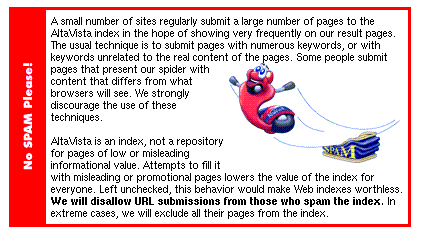

Information Research, Vol. 4 No. 3, February 1999


Information Research, Vol. 4 No. 3, February 1999 | ||||
|
|
|||
This note concerns two phenomena which are the subject of ongoing research at Wayne State University in Detroit, Michigan, USA. The overall aim of the current investigation is to identify header and text elements which will assist researchers in determining quickly the relevance, authenticity, and value of digital artifacts, as well as information about the credentials of their creators. Specifically, we note two trends in Web access and design which would appear to have ramifications - one primarily for Web designers and another for information intermediaries, such as librarians and archivists. We contend that the absence of editorial control, coupled with the alarming tendency toward deliberate skewing of Web search results by profiteers, will stress network bandwidth resources, contribute to a crisis of confidence in the Internet, and if unchecked, may potentially have far reaching consequences for the growth of scientific and scholarly knowledge, and for its dissemination to the public.. We began this line of research with an analysis of Listserv® traffic, conducted in 1996 (Brown-Syed & Witzke, 1997), and are currently investigating Usenet News postings and Web pages created by academics.
Web designers spend a great deal of effort creating attractive and useful home pages. However, preliminary analysis of server statistics suggests that many users never see these pages, having arrived at individual documents on the server through other means.
The two main ways in which people appear to arrive at individual documents on Web sites are: 1) hot links from other Web pages, and 2) through search engines. The topics of documents are more likely to be of importance than the site's Web page hierarchy. Almost no one comes in through the "front door", that is by accessing the site's main menu and then following links to individual pages. This should not surprise librarians or archivists. People looking for print or AV material on particular topics rarely know that topical directories of academic, public, and special library contents exist. However, given the lack of editorial control on the Net, where authors act as their own publishers, the consequences of arriving at specific items are more far reaching. While one can indeed tell much about a book by its cover and title page, or a film by its credits, Net authors' credentials, and hence the reliability of their utterances, must be determined by other means.
If asked to locate information on Soft Systems Methodology, only someone acquainted with its history would think of going to the University of Lancaster first. Instead, the user would probably try a subject keyword search for that term.
This phenomenon causes some unexpected results, both for users and for providers of information. For instance, in 1997, we discovered that the server at Wayne State University's medical library was most popular for its alternative medicine pages.
On a server in the Library and Information Science Program at Wayne, we found that relatively few visitors were interested in LIS. An article on the New World Information and Communications Order, written for the electronic journal LIBRES in 1993, was mounted on the author's server in 1995. It receives several hundred hits a month, and this situation has remained constant for at least a year. The material in the document is quite dated. What could account for its popularity?
Hot links to this page may be found at a journalism school in the United States, where the article appears on a course reading list. A student page on obtaining cheap airline tickets was the most popular page on the LIS server during 1997. It was hot-linked from a page at a medical faculty in Sweden.
However, hot links account for far fewer hits than do search engines. Removing internal requests (those from IP numbers within the Wayne subdomains), and backtracking requests to their sources, we find users arriving at the server from around the globe, but few appear to be looking for information about the Program and its courses.
Within a 24-hour period in December, 1998, the LIBRES page was accessed by users as far apart as Goteborgs Universitet in Sweden, a JANET subnetwork in Kent England, and the campus network at the University of Toronto in Canada.
The article is academic, dated, somewhat pedantic, and concerns a topic of interest primarily in international development and communications studies. In the case of items with broader appeal, the pattern of "back door" access is even more pronounced and demonstrable. For example, the author's server contains a page entitled "King Arthur" which was mounted as an example of HTML coding for an Internet class in 1996. The material had originally been written as mere filler in order to demonstrate the use of certain HTML commands.
Since then, it has consistently received hundreds of hits each month. Between December 2nd and December 7th, 1998, only 30 people visited the server's index page, and just 26 accessed pages about specific LIS courses. Meanwhile the King Arthur page was requested 118 times - despite the fact that it contains little concrete information about that monarch. In fact, concerned with the number of hits, we modified the page to contain more relevant information during the summer of 1997.
 Recently, search engine services such as AltaVista, have attempted to clamp down upon the practice of "spamming" the Web by loading pages with misleading or repititious keywords. (AltaVista, 1999). The service now includes a warning (photo) in its pages which allow submission of specific URLs to the index. However, since network spiders or robots periodically call at each Web site to update indexes automatically, it is possible, indeed probable, that some Web designers will not see nor heed warnings of this nature.
In information retrieval theory (IR theory), successful searching is considered the result of balancing the recall of a retrieval set with its precision. Recall is a measure of the number of items retrieved, and precision is a measure of the number of retrieved items which the searcher considers to be "in context". A "false drop" is an instance of the search term in the retrieval set, which is "out of context", given the searcher's intentions.
Librarians point to metadata as the cure for high recall and false drops resulting from Web searches, but metadata alone will not prevent the recall of spurious items or information of dubious content and quality. In fact, designers anxious to promote their clients' products are becoming quite adept at loading the keyword fields with repetitions of certain words. Much as small companies take names like "AAAA Towing" so as to have their names first in telephone directories, designers repeat keywords literally hundreds of times within the headers of documents. As well, some designers fill the bodies of their documents with hundreds of repeated words, written in text which is the same color as the document's background. Words written in black against a black background are invisible to users, but are indexed by search engines. It is the digital equivalent to writing in "invisible ink". To view the "secret" writing, all you need is a mouse, or knowledge of your browser's "View Document Source" option.
The page you are now reading contains text "invisible" to users but indexed by search engines. To view the hidden message, place your mouse directly below the words "Figure A", depress your left mouse button, and drag the mouse across the blank area which appears between the two horizontal lines.
Figure A:
information studies information studies information studies information studies
information studies information studies information studies information studies
information studies information studies information studies information studies
information studies information studies information studies information studies
information studies information studies information studies information studies
information studies information studies information studies information studies
information studies information studies information studies information studies
information studies information studies information studies information studies
information studies information studies information studies information studies
information studies information studies information studies information studies
We reported the use of this technique at the CAIS '98 conference in Ottawa (Brown-Syed, 1998). It is now evidently in widespread use. While search engine robot programs could "unique" the keyword field, indexing only one occurrance of each word, it would be difficult to apply a similar process to texts of documents themselves - to do so would defeat the assessment of document relevance, which is based upon the number of times a word appears in the body of the text, as well as in the document header. Words which appear legitimately in a document would be "uniqued away" along with the intentionally misleading repetitious ones.
In a singular example of bad "netiquette", one site in the Netherlands offering a Beginner's Guide to Internet opens with a page containing 18 lines of explanatory notes (including HTML markup), followed by the words, "The rest of this page is for the search engines", followed by some blank space, and 104 lines of repetitive keywords. These words appear in the same colour as the text - white, against a grey background. The designer would appear either to be unaware of the techniques for concealing keywords described above, or to be encouraging the practice deliberately. The page is signed only with the alias, "webmaster", rather than the with creator's real name.
Aside from constituting an incredible waste of bandwidth, the practice skews users' searches, sometimes in unpredictable ways. One site distributing erotic pictures of entertainers has created an first page aptly entitled "words.htm". Of the 302 lines, and 19,692 bytes in this particular page, only one line is visible. It contains exactly 6 words, or 40 bytes of useful text.
The rest of the page consists of hundreds of repetitions of concealed keywords. The word "supermodel" occurs 155 times in the header and text, along with 169 combined occurances of the words "nude" and "naked", 79 of the word "celebrity", 85 of the word "gay", and so forth. The names of several noted performers are also concealed in the header or against the background of the message body.
Users seeking more conventional information about entertainers, will arrive at this site first, as its designers have intentionally skewed its relevance ranking by including words like "celebrity". On some engines, even a search on a term as innocuous as "Canadian singer" or "Shania Twain" may point users first to sites containing risque photos. While this may be welcome news to people looking for erotica, it is annoying at best to researchers in a hurry to find information about world personalities. Surprisingly, a recent search for another Canadian band, Barenaked Ladies, yielded better results - most search engines consulted in December 1998 correctly retrieved information about the rock band, provided that the string "barenaked" was entered without an internal space. In June 1998, the context had been almost universally misinterpreted, regardless of spacing.
As with more conventional print and audio visual material, a knowledge of the sources is invaluable for users of the Net. Experience teaches that "sony.com" is a likely place to search for that production company's films and TV programs, and that the Internet Movie Database is a good source of filmoraphies. This sort of knowledge is more typically the province of librarians and archivists than of members of the public or, for that matter, of anyone searching for items outside their customary field of interest. Until search engine software is developed to defeat the ethically questionable practice of "loading", false drops and high recall would appear to be inevitable on the Net.
How to cite this paper:
Brown-Syed, Christopher (1999) "Back door entries, invisible ink, and false drops on the Web: an interim research note." Information Research, 4(3) Available at: http://informationr.net/ir/4-3/paper58.html
© the author, 1999. Last updated: 29th January1999
Contents |
Home |